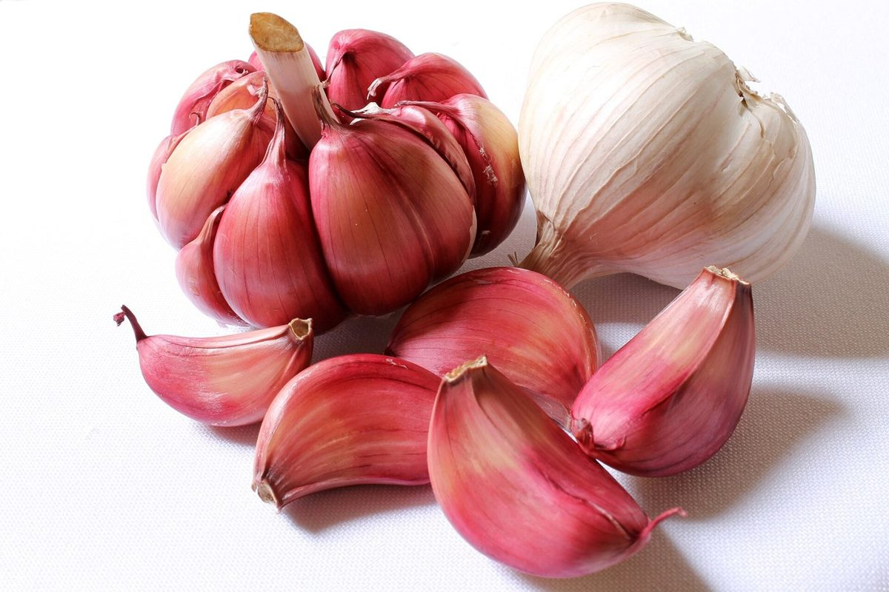
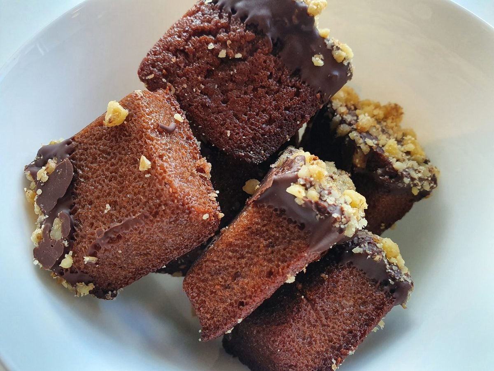

about
キッチンカーから、小さな実店舗へ
ブルームカフェは、馬場克之さん・帆乃月さんご夫婦が営む、スパイスカレーとスイーツのお店です。以前はキッチンカー「ブルームバーガー」として地元の食材を使ったハンバーガーを販売し、2025年4月に実店舗を開きました。
「長崎の食材を宣伝したい」という思いは、車から店になっても変わらないそうです。地元の農家の野菜をできるだけ使い、カレーで地域を元気にしたい。将来は県外にも店を構えて、諫早の食材のおいしさを伝えたい、と報じられています。
出典: NCC長崎文化放送「長崎いまコレ」、地域ブログ、飯盛町のカフェ紹介記事(詳細は制作メモに記録)。
店名「ブルーム」の意味は確認できていません。このサイトの「咲く」というイメージは制作側のものです。


menu
カレーと、甘いもの、飲みもの

- スパイスカレー全5種類のうち、1日に3種類ほどを提供(報道による)。野菜や豆が主役の「キーマ」系など。
- デザートチーズケーキやテリーヌなど(ブログ紹介による。日替わりの可能性あり)。
- ドリンクコーヒーなど。
| 価格 | 準備中 |
|---|---|
| 営業時間 | 準備中 |
| 定休日 | 準備中 |
| 電話 | 準備中 |
メニューや営業日は変わることがあります。最新情報はInstagramでご確認ください。




voice
口コミ(イメージ例)
以下は制作側が作った例文です。実在のお客様の声ではありません。
イメージ例カレーの辛さがやさしくて、野菜の味がちゃんと分かりました。
ランチで利用
イメージ例デザートまで食べたくなって、結局ゆっくりしてしまいました。
休日に利用
イメージ例キッチンカーの頃から気になっていたので、お店で食べられてうれしいです。
ご家族で利用